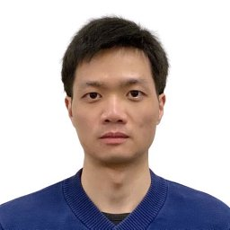

Junming Xie 谢君明
Math FellowDepartment of Mathematics
University of California, Santa Barbara
Santa Barbara, CA 93106-3080
Office: SH-6702
Email: junming-xie@ucsb.edu
I am currently a Math Fellow in the Department of Mathematics at the University of California, Santa Barbara, where my mentor is Prof. Guofang Wei. Before joining UCSB, I was a Hill Assistant Professor in the Department of Mathematics at Rutgers University–New Brunswick, with Prof. Xiaochun Rong as my mentor. I received my Ph.D. degree in Mathematics from Lehigh University under the supervision of Prof. Huai-Dong Cao.
My research interests are Differential Geometry, Ricci Flow, and Mean Curvature Flow.
Publications and preprints
-
Kählerity of complete almost-Kähler gradient shrinking Ricci solitons
Preprint, 2026. [arXiv] -
Convexity of mean convex asymptotically conical self-expanders to the mean curvature flow
Preprint, 2025. [arXiv] -
A note on the classification of four-dimensional gradient steady and expanding Ricci solitons
Proc. Amer. Math. Soc. (accepted). [arXiv] -
Curvature pinching of asymptotically conical gradient expanding Ricci solitons
J. Differential Geom. (accepted). [arXiv] -
Four-dimensional gradient Ricci solitons with (half) nonnegative isotropic curvature
J. Math. Pures Appl. (9) 197 (2025), 103686. [Journal] [arXiv] -
Four-dimensional complete gradient shrinking Ricci solitons with half positive isotropic curvature
Math. Z. 305 (2023), no. 2, Paper 25. [Journal] [arXiv] -
Convexity of 2-convex translating and expanding solitons to the mean curvature flow in ℝn+1
J. Geom. Anal. 33 (2023), no. 8, Paper 252. [Journal] [arXiv] -
Complete gradient expanding Ricci solitons with finite asymptotic scalar curvature ratio
Calc. Var. Partial Differential Equations 62 (2023), no. 2, Paper 48. [Journal] [arXiv]
Teaching
Previous teaching
Rutgers University–New Brunswick (instructor)
- Spring 2026: MATH 250 — Introductory Linear Algebra
- Fall 2025: MATH 354 — Linear Optimization
- Spring 2025: MATH 354 — Linear Optimization
- Fall 2024: MATH 354 — Linear Optimization
- Spring 2024: MATH 477 — Mathematical Theory of Probability
- Fall 2023: MATH 135 — Calculus I for the Life and Social Sciences
Lehigh University (teaching assistant)
- Spring 2023: MATH 22 — Calculus II
- Fall 2022: MATH 51 — Survey of Calculus I
- Spring 2022: MATH 23 — Calculus III
- Fall 2021: MATH 21 — Calculus I
- Spring 2021: MATH 22 — Calculus II
- Fall 2020: MATH 51 — Survey of Calculus I
- Spring 2020: MATH 22 — Calculus II
- Fall 2019: MATH 22 — Calculus II
- Spring 2019: MATH 23 — Calculus III